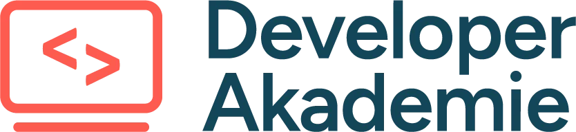
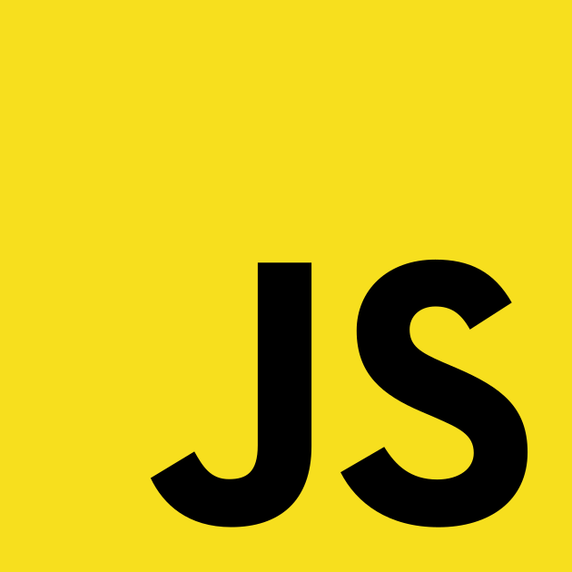
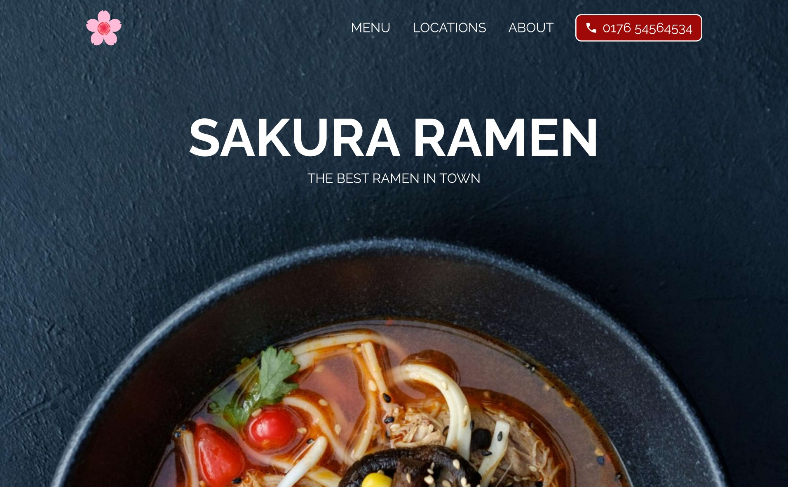
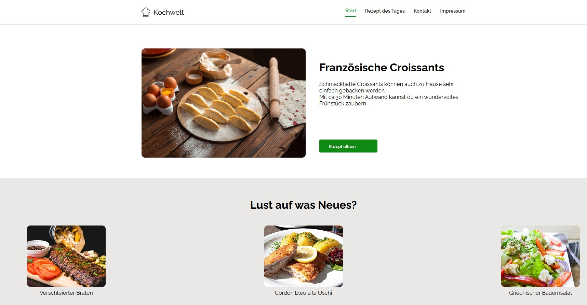

Hallo , Ich bin Sandra
Junior Fullstack - Entwicklerin in Ausbildung
Kreative und motivierte Entwicklerin mit Fokus auf moderne Frontend-Entwicklung
und responsive
Webanwendungen.
Aktuell vertiefe ich zusätzlich meine Kentnisse in Backend-Technologien,
Datenbanken und Fullstack-Entwicklung.
Sandra Cakor
Geboren:
10.06.1997
E-Mail:
sandracakor@gmail.com
GitHub:
SandraCakor-DotCom
ÜBER MICH
Ein paar Worte über mich.
Seit September 2025 absolviere ich meine Ausbildung zur Fachinformatikerin für Anwendungsentwicklung. Zusätzlich erweitere ich seit Februar 2026 mein praktisches Wissen durch die Developer Akademie. Meine Begeisterung für die IT entstand aus der Freude am Programmieren, der Kreativität beim Entwickeln eigener Projekte und der Neugier, ständig neue Technologien und Lösungen kennenzulernen. Ich liebe es, Probleme zu lösen, Neues kennenzulernen und mich sowohl fachlich als auch persönlich kontinuierlich weiterzuentwickeln.
Mehr über mich
Meine Fähigkeiten.
HTML
Struktur und Aufbau moderner Webseiten mit semantischen Elementen.
CSS
Styling, Layouts, Responsive Design und moderne Website-Gestaltung.

JavaScript
Interaktive Funktionen, Logik und dynamisches Verhalten auf Webseiten.
Meine Projekte.

Sakura Ramen
Eine moderne Restaurant-Website für ein fiktives Ramen-Restaurant mit Fokus auf Design, Layout und Responsive Webdesign.
Code ansehen
Kochwelt
Ein gemeinsames Gruppenprojekt, ähnlich wie Chefkoch aufgebaut, mit Rezeptseiten, Navigation und moderner Webseitenstruktur.
Code ansehen